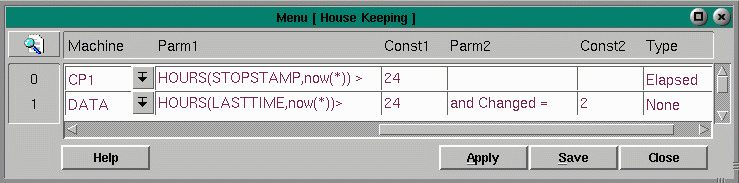

Housekeeping

The Housekeeping menu is used to purge data no longer needed from the database tables. Set up very similar to the Batches menu, Housekeeping configures the timing for processing these clean up routines. Since time is normally a consideration in purging tables, database tables should include a time stamp, often named similarly to 'time assigned'. Parameters are provided where conditions can be entered in a like format to structured query language. The Constant fields are used in combination with parameters. We will refer to the following fields when configuring a Housekeeping routine:
Fields:
Description - a meaningful description of the actionTO CREATE A CLEAN-UP ROUTINETable Name - brings up the Menu of Menus from which to select the table to purge
How Often - an integer to fill in the phrase, 'every Increment(s) '
Increment - brings up the Interval Menu which displays increments of time
Current Stat - keeps counting internally, procedure is executed if Current Stat >= How Often
Was Stat - uses the Increment to display the current status of that increment in the Today Menu
Process - brings up the Process Type menu which displays the four system processes
GUI - priority of 10, polled for activity approximately every 1/4 sec or every 250ms
CTRL - priority of 12, polled for activity approximately every 1/10 sec or every 100ms
SORT - priority of 13, polled for activity approximately every 1/20 sec or every 50ms
SERV - priority of 11Machine - brings up the Machine menu listing all the machines on the FortnaPlus(c) network
Choose the machine to execute the procedure.Parm 1 - a condition formatted like an SQL where clause
Const 1 - a string to be used by the parameter 1
Parm 2 - an optional second condition formatted like an SQL where clause, preceeded by 'and'
Const 2 - a string to be used by the parameter 2
Type - the type of interval that is used (an elapsed period, an absolute time, or count based)
Logfile - a boolean value that determines if the data in the database is written to an ASCII comma delimited file prior to deletion of the database records, or if the data is simply dumped.
1. Decide how often you will want to remove records from the table. Remember that if large numbers of records are to be handled or deleted, you may want to schedule the clean up during hours of least system activity or if this is not possible, do more frequent deletions of a smaller number of records.
2. Decide on your conditions for removing records from a table. Space is provided for up to two parameters. Remember to place the most restrictive condition first.
3. Decide which machine should handle the processing.
AN EXAMPLE: TO CREATE A ROUTINE TO PURGE CARTON MASTER RECORDS WHEN CONFIRMED AND 3 DAYS OLD
1. Select Utility Menu from the Main Menu
2. Select Administration Utilities from the Utility Menu
3. Select Housekeeping from the Administration Menu
4. Move the cursor to record 0, or the first empty record
5. Type "purge carton master", in the Description field.
6. Click the pull-down symbol at Table Name to bring up the Menu of Menus. Select CartonMaster. Press Enter
7. Type 3 in the How Often field
8. Click the pull-down symbol at the Increment field, select Mday (month day), press Enter
9. Click the pull-down symbol at the Process field, select GUI and press Enter
10. Click the pull-down symbol at the Machine field, select DATASERVER for our example, press Enter
11. Type "CONFIRMED = " in the Parm 1 field
12. Type 1, in the Const 1 field
13. Type "AND DAYS(TIMEASSIGNED,NOW(*)) > " in the Parm 2 field
14. Type 3, in the Const 2 field
Copyright © 2001 Fortna Inc. All rights reserved.